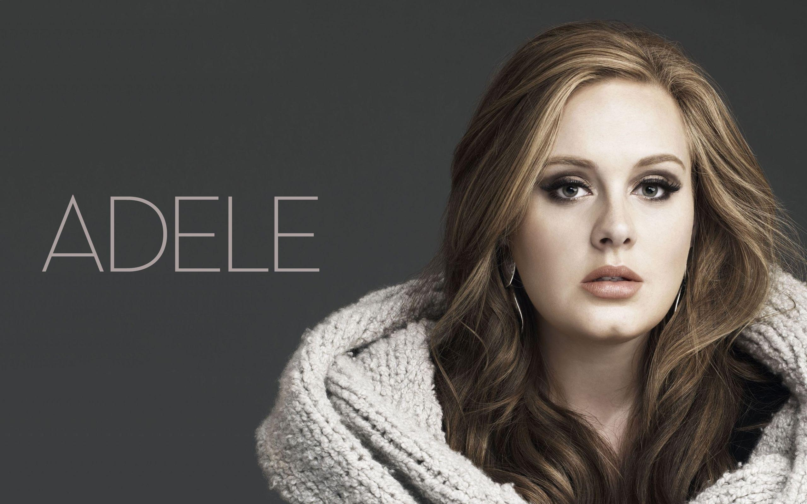

 Artista: Adele Laurie Blue Adkins
Album:Set fire to The Rain
Descripción: La canción refleja que la persona lucha contra si misma
por que por un lado se da cuenta de lo toxica que es la otra persona
pero por el otro lado le duele mucho dejarla ir.
 Artista: Marshall Bruce Mathers
Artista: Marshall Bruce Mathers
Album: Infinite
Descripción:La canción refleja a un hombre con problemas que lucha por sobrevivir.Le atormentan
los recuerdos, como pesadillas.
 Twenty One Pilots
Twenty One Pilots